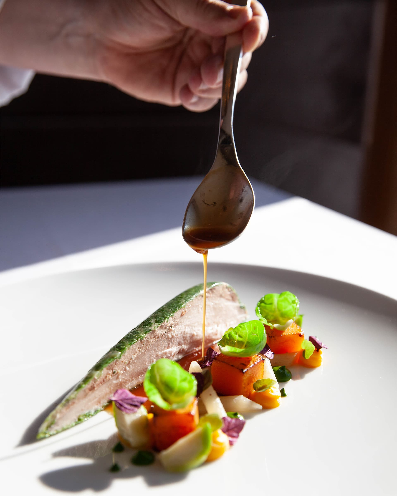
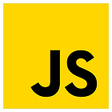

About Us
～私の自己紹介～前職の食品製造現場では、保守点検やDX推進に携わりました。日々の業務で手書きの書類やアナログな管理による非効率さを実感し、「現場の仲間が楽になる仕組みを作りたい」と強く感じたことが私の原点です。

現在は福岡でPHPを中心としたバックエンド開発を学び、自動発注システム等の実用的な開発に注力しています。製造現場で培った「不具合を防ぐ視点」と「改善マインド」を武器に、福岡で貢献できるエンジニアを目指します。
Webサイトの構造を正しく理解し、適切なマークアップが可能です。
FlexboxやGridを用いた、柔軟なレスポンシブ設計が可能です

DOM操作による動的な演出や、イベント処理の実装が可能です。
CRUD機能の実装や、自動メール送信システムの構築経験があります